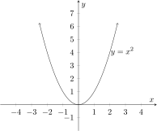
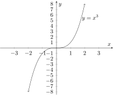
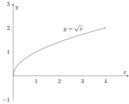
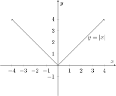
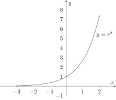
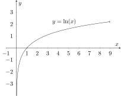

This section provides the specific parent functions you should know.
Parent functions and notable features
This section will present each of the function types from the library of functions
list, give it’s parent function, and then any relevant information on that
function.
Polynomials
Polynomials are very generic and ubiquitous, so they require a general note prior
to discussing the various specific types. Polynomials have been studied for
more than 5000 years and unfortunately this means that there are a lot of
things to learn about them, even without going into calculus. Students should
expect to spend nearly as much time studying and learning techniques in
the section on polynomials as we do on almost all the other function types
combined. Generally the study polynomials is split up into the study of
linear polynomials (degree 1 or 0), quadratic polynomials (degree 2), cubic
polynomials (degree 3), and ‘higher order polynomials’ (degree 4 and higher).
There are good reasons for this that we will discuss in the exploration on
Polynomials section but for this section we also divide polynomials up in this
way.
Linear Polynomials: Linear polynomials are perhaps the single most well
studied function in existence and simultaneously the most common function to
occur in nature. For now we will merely note that the parent function is
also one of the nicest; which is also sometimes referred to as “the identity
function”.
( This is for some really abstract reasons, most of which we won’t
cover in this class. This will come up tangentially when we discuss function
composition in a future topic ) Linear polynomials are typically used in situations
where two quantities are just a constant multiple of one another (or off by a
constant factor). Such multiples may represent things like price, speed, or
mass.
Parent Function:
The parent function for a linear polynomial is
Graph of Parent Function:
Notable Features of Graph:
The notable features are:
There is a point of interest; (0,0) which is an important point for a
variety of reasons we will discuss in the future.
The shape is a perfectly straight line.
Example usage:
Examples where linear functions are used occur in many physical
and natural applications. For example;
Distance is a linear function of time and speed; specifically .
Calculating cost given a number of items and price per item. For
example for cost, price, and number of items.
Weight is a linear function of mass, since your weight is the force (really acceleration but this isn’t a physics class) of gravity times
your mass. Specifically .
The states of spin for electrons can be represented by a linear
function.
Quadratic Polynomials: Quadratic polynomials, or polynomials of degree two, are
also incredibly well studied as they also have very special roles in mathematical
history. The parent function is the classic parabola; .
Parent Function:
The parent function for a quadratic polynomial is
Graph of Parent Function:

Notable Features of Graph:
The notable features are:
There is a point of interest; (0,0) which is often referred to as the
‘vertex’ of the quadratic and represents (on the parent function
specifically) the lowest point on the graph.
The shape is called a parabola.
This is a smooth curve, as oppose to the absolute value function
below; this fact is actually exceptionally important for calculus one.
Example usage:
Examples where quadratic functions also occur in many physical
and natural applications. For example;
Ballistic arcs (such as throwing a ball through the air, or firing a
bullet) following a (more or less) quadratic curve.
The effect of acceleration on location (such as how pushing the
gas pedal in a car effects your distance traveled on the road) is a
quadratic.
Cubic Polynomials: Cubic polynomials, or polynomials of degree three are
primarily important because they are the first non-linear polynomial of odd degree.
We will discuss why we care about such things in the section on polynomials
specifically.
Parent Function:
The parent function for a cubic polynomial is
Graph of Parent Function:

Notable Features of Graph:
The notable features are:
There is a point of interest; (0,0) which is sometimes referred to as
the ‘vertex’, but more often referred to as a (the) point of (rotational)
symmetry.
It is (deceptively) important that this function is (strictly) increasing;
meaning that, at any point, if you go to the right of that point on
the graph, the graph will go up.
Example usage:
Examples where cubic functions genuinely occur tend to be more
rare as they are more often used as approximations of actual behavior, rather
than true models of specific behavior. Nonetheless, some examples
exist;
Most impulse (sudden rapid changes of acceleration) effects are
modeled by cubic polynomials.
Efficiency of space usage in three dimensional space is modeled by
cubic polynomials.
Higher (order) Polynomials: We won’t discuss higher order polynomials in this
section other than to say that for any given degree, the parent function will be the
function of raised to that degree. Thus for a fifth degree polynomial, the parent
function is . We will go into this in greater detail in the polynomial exploration
section.
Radicals
Parent Function:
The most common radical function we consider is the square
root function, whose parent function is .
Graph of Parent Function:

Notable Features of Graph:
The notable features are:
A point of special interest is the point (0,0) on the parent function.
This is sometimes referred to as the ‘vertex’ or ‘origin’ of the function.
The restricted (natural) domain of the parent function is also of
special interest as it is the non-negative real numbers, ie the interval
.
The slope of the graph near the origin is of interest as it seems to
slope to an almost straight up and down curve as it gets really close
to the origin. (This is something that is made precise in calculus
one.)
Example usage:
One of the chief roles of radical functions is to undo a polynomial
term. That is to say that a radical is typically used to eliminate a
power, such as when you square root both sides of to solve for .
Another usage is to find a geometric mean, which is a number that is
in the middle of two numbers in a multiplicative, rather than additive,
sense. This is something studied and utilized extensively in statistics
and/or probability, but we won’t be studying it much in this class or
in calculus.
Absolute Value
Parent Function:
The parent function is
Graph of Parent Function:

Notable Features of Graph:
The notable features are:
A point of interest (on the parent function) is the point (0,0), which
is sometimes referred to as the ‘vertex’ or ‘reflection’ point.
The sharpness of the change in slope at the reflection point is worth
noting, this is referred to as a ‘corner’ and is something that is studied
closely in calculus 1.
Absolute values are used in calculus primarily for the sake of the
effect of the corner at the reflection point, and the nature of its graph.
Example usage:
Whenever we wish to ensure a value is positive, an absolute value
is a useful tool.
Distances are usually represented by absolute value. In fact, one
interpretation of the absolute value of a number (given to us
by the ancient greeks, who viewed all numbers in this way) is the
“distance from zero”
Accuracy is another area where absolute value is often used;
specifically if we want to know which of several numbers are ‘closer’ to
the correct value, we can interpret ‘closer’ meaning a type of distance,
and use the absolute value.
Exponentials
Parent Function:
The most often used exponential function is the one with the
‘natural’ base; whose parent function is .
Graph of Parent Function:

Notable Features of Graph:
The notable features are:
A point of interest is the point (0,1) for a variety of reasons which we
will discuss more in the section on exploring exponential functions.
The graph has a horizontal asymptote at to the left.
The graph is strictly increasing, like the cubic polynomial.
The growth (sharpness) of the increase to the right is greater than
any other function on this list.
Example usage:
Exponential functions should be used whenever you are discussing
a situation where the change in something over time depends on the value that
is changing at each moment. This is somewhat vague, but specific examples are
easy to come by, such as;
The most common place to see exponential functions used are
exponential growth functions such as earning compound interest, or
population growth. In these cases, the more of the thing you have
(the more money, or more population) the more you get each growth
iteration.
Another common place to see exponential functions used is the spread
of disease or other contagion. The more people infected, the more
people there are to infect others, and so it’s (initial) progress tends
to be exponential.
Logarithms
Logarithms are classically defined as the inverse function to the exponential function.
In some sense they are the most ‘artificial’ function in the library of functions
because it doesn’t really arise on it’s own in very many contexts.
Parent Function:
The most common log to consider is the so-called ‘natural log’,
whose parent function is . (In industry, most software will actually denote
the natural log with since nobody actually uses the so-called ‘common log’ or
log base 10 anymore. For historical reasons however most math classes still use
for the natural log and for log base ten and we conform to that convention
here.)
Graph of Parent Function:

Notable Features of Graph:
The notable features are:
A point of interest is the point (1,0) as it is the point that corresponds
to the point (0,1) of the inverted exponential function.
It is also important to notice that the log function has a restricted
domain of , but it’s range is all real numbers.
The log function is an increasing function like we mentioned for the
cubic polynomial and exponential function.
Example usage:
The log function is most commonly used to invert the process of
an exponential function, and so natural occurrences of the log function are
uncommon. Nonetheless such examples exist;
The scale upon which we measure the magnitude of earthquakes
is logarithmic with a base of 10. This means that a magnitude 5
earthquake is ten times stronger than a magnitude 4 earthquake and
a thousand times more ‘powerful’ than a magnitude 2 earthquake.
The half-life decay rate of radioactivity is logarithmic. In essence this
is because half-life decay is exponential growth in reverse, instead of
getting ‘twice as big’ every years, it gets ‘half as big’ every years.
This could be done exponentially, but it is more generally asked;
“when will it be safe again?” which is equivalent to asking “When
will it be below a radioactivity level of ?”, and to determine that we
need to use a logarithm.
Piecewise Functions and Rational Functions
In the case of piecewise and rational functions, these are more ways to combine other
functions rather than their own fundamental functions. For this reason they do not
have parent functions in the same way as the other functions, although we will
discuss how to deal with this issue in their respective sections.